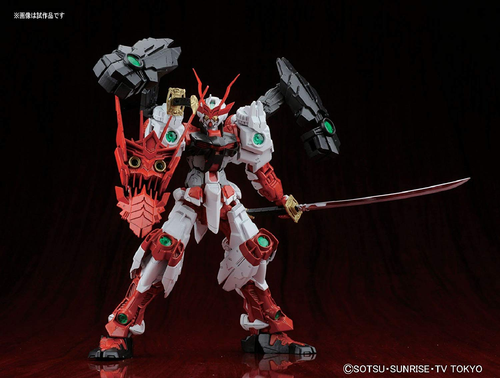
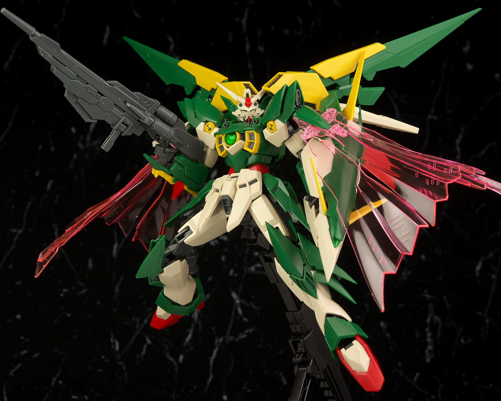
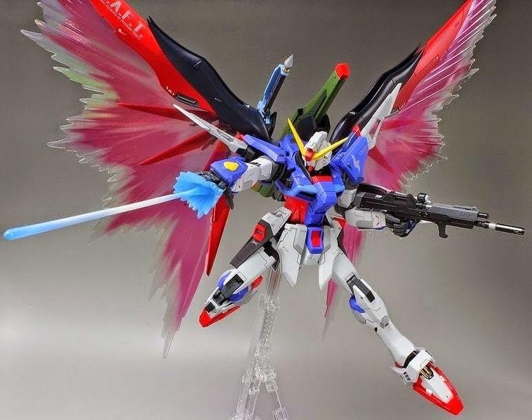
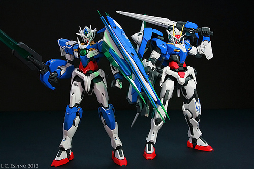
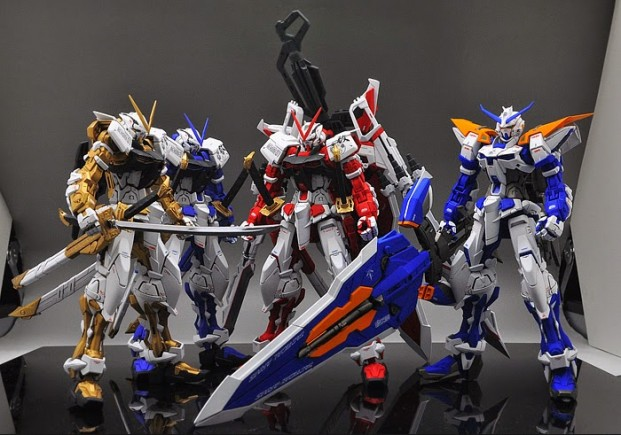

Master grade (MG) model kits (also known as 1:100 kits), were first introduced in 1995. These kits were made to be much more detailed, articulate and less fragile than the previous RG model kits. MG kits are the most popular line of gunpla model ktis because they are in the middle range of difficulty, price, and display. They may cost more than a HG or a RG kit. But they are made far better and are much larger. They also aren't as expensive perfect grade (PG) model kits which are far superior than all other other model kits.
Master Grade kits offer a skeletal inner frame with working hydraulics, and some even offer LED lights for special gimmicks. To gain a perspective on the 1:100 scale, MG kits also provided a pilot figurine; these were characters within the anime that actually controlled the Gundams. This truly show how small these kits were compared to their giant, anime versions.
  Even though the MG gundam model kits are the most popular types of kits. They gain a lot of ridicule as well. Bandai is known for reusing many runners over and over again on different kits. Since 2010, when MG kits became the most popular, many of the kits were unique and fan favorites, Bandai even remade many HG kits as MG kits because of fan votes. The coming years after 2010, the trend of inner frames and runners being reused and sold as new models became very common.
 The MG Astray Red Frame has over 3 different iterations. two being blue, one being white and other differently colored models. Though they may all be unique, the fundamental build would be almost the exact same for each of these Astray kits. This caused consumers to complain to Bandai because even though the Astrays were all unique and cool, the community was frustrated having to build the same kit multiple times. The community went on a decline around 2015-2017. Another example of kits being reused is in the MG 00 Raiser. Bandai recently remade this kit as MG 00 Quant, which is am absolutely fantastic kit. But since 00 Raiser was released in 2011 and 00 quant was released in 2018, there are many parts in the 00 Quant that are simply outdated, or problems with kits back in 2011 that resurfaced in this kit that many kits have fixed since then.